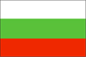
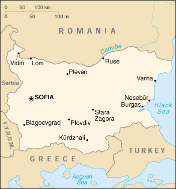

{kind=link}


| Bulgaria |  |
|
|  | |
| Introduction |
Background: Having fought on the losing side in both World Wars, Bulgaria fell within the Soviet sphere of influence and became a People's Republic in 1946. Communist domination ended in 1991 with the dissolution of the USSR, and Bulgaria began the contentious process of moving toward political democracy and a market economy while combating inflation, unemployment, corruption, and crime. Today, reforms and democratization keep Bulgaria on a path toward eventual integration into the EU and NATO.
| Geography |
Location: Southeastern Europe, bordering the Black Sea, between Romania and Turkey
Geographic coordinates: 43 00 N, 25 00 E
Map references: Europe
Area:
total:
110,910 sq km
land:
110,550 sq km
water:
360 sq km
Area - comparative: slightly larger than Tennessee
Land boundaries:
total:
1,808 km
border countries:
Greece 494 km, The Former Yugoslav Republic of Macedonia 148 km, Romania 608 km, Serbia and Montenegro 318 km (all with Serbia), Turkey 240 km
Coastline: 354 km
Maritime claims:
contiguous zone:
24 nm
exclusive economic zone:
200 nm
territorial sea:
12 nm
Climate: temperate; cold, damp winters; hot, dry summers
Terrain: mostly mountains with lowlands in north and southeast
Elevation extremes:
lowest point:
Black Sea 0 m
highest point:
Musala 2,925 m
Natural resources: bauxite, copper, lead, zinc, coal, timber, arable land
Land use:
arable land:
43%
permanent crops:
2%
permanent pastures:
14%
forests and woodland:
38%
other:
3% (1999 est.)
Irrigated land: 12,370 sq km (1993 est.)
Natural hazards: earthquakes, landslides
Environment - current issues: air pollution from industrial emissions; rivers polluted from raw sewage, heavy metals, detergents; deforestation; forest damage from air pollution and resulting acid rain; soil contamination from heavy metals from metallurgical plants and industrial wastes
Environment - international agreements:
party to:
Air Pollution, Air Pollution-Nitrogen Oxides, Air Pollution-Sulphur 85, Air Pollution-Volatile Organic Compounds, Antarctic-Environmental Protocol, Antarctic Treaty, Biodiversity, Climate Change, Endangered Species, Environmental Modification, Hazardous Wastes, Law of the Sea, Nuclear Test Ban, Ozone Layer Protection, Ship Pollution, Wetlands
signed, but not ratified:
Air Pollution-Persistent Organic Pollutants, Air Pollution-Sulphur 94, Climate Change-Kyoto Protocol
Geography - note: strategic location near Turkish Straits; controls key land routes from Europe to Middle East and Asia
| People |
Population: 7,796,694 (July 2000 est.)
Age structure:
0-14 years:
16% (male 623,285; female 591,655)
15-64 years:
68% (male 2,610,573; female 2,685,190)
65 years and over:
16% (male 546,029; female 739,962) (2000 est.)
Population growth rate: -1.16% (2000 est.)
Birth rate: 8.06 births/1,000 population (2000 est.)
Death rate: 14.63 deaths/1,000 population (2000 est.)
Net migration rate: -5.06 migrant(s)/1,000 population (2000 est.)
Sex ratio:
at birth:
1.06 male(s)/female
under 15 years:
1.05 male(s)/female
15-64 years:
0.97 male(s)/female
65 years and over:
0.74 male(s)/female
total population:
0.94 male(s)/female (2000 est.)
Infant mortality rate: 15.13 deaths/1,000 live births (2000 est.)
Life expectancy at birth:
total population:
70.91 years
male:
67.45 years
female:
74.56 years (2000 est.)
Total fertility rate: 1.13 children born/woman (2000 est.)
Nationality:
noun:
Bulgarian(s)
adjective:
Bulgarian
Ethnic groups: Bulgarian 83%, Turk 8.5%, Roma 2.6%, Macedonia, Armenian, Tatar, Gagauz, Circassian, others (1998)
Religions: Bulgarian Orthodox 83.5%, Muslim 13%, Roman Catholic 1.5%, Jewish 0.8%, Uniate Catholic 0.2%, Protestant, Gregorian-Armenian, and other 1% (1998)
Languages: Bulgarian, secondary languages closely correspond to ethnic breakdown
Literacy:
definition:
age 15 and over can read and write
total population:
98%
male:
99%
female:
98% (1999)
| Government |
Country name:
conventional long form:
Republic of Bulgaria
conventional short form:
Bulgaria
Data code: BU
Government type: parliamentary democracy
Capital: Sofia
Administrative divisions: 9 provinces (oblasti, singular - oblast); Burgas, Grad Sofiya, Khaskovo, Lovech, Montana, Plovdiv, Ruse, Sofiya, Varna
Independence: 22 September 1908 (from Ottoman Empire)
National holiday: Independence Day, 3 March (1878)
Constitution: adopted 12 July 1991
Legal system: civil law and criminal law based on Roman law; accepts compulsory ICJ jurisdiction
Suffrage: 18 years of age; universal
Executive branch:
chief of state:
President Petar STOYANOV (since 22 January 1997); Vice President Todor KAVALDZHIEV (since 22 January 1997)
head of government:
Chairman of the Council of Ministers (Prime Minister) Ivan KOSTOV (since 19 May 1997); Deputy Prime Minister Petur ZHOTEV (since 21 December 1999)
cabinet:
Council of Ministers elected by the National Assembly
elections:
president and vice president elected on the same ticket by popular vote for five-year terms; election last held 27 October and 3 November 1996 (next to be held NA 2001); chairman of the Council of Ministers (prime minister) nominated by the president; deputy prime ministers nominated by the prime minister
election results:
Petar STOYANOV elected president; percent of vote - Petar STOYANOV 59.73%
Legislative branch:
unicameral National Assembly or Narodno Sobranie (240 seats; members elected by popular vote to serve four-year terms)
elections:
last held 19 April 1997 (next to be held NA 2001)
election results:
percent of vote by party - UtdDF 52%, BSP 22%, ANS 7%, Euro-left 5.5%, BBB 4.95%; seats by party - UtdDF 137, BSP 58, ANS 19, Euro-left 14, BBB 12; note - seating as of May 1997: UtdDF 126, DL 58, ANS 19, Euro-left 17, PU 11, independents 9
Judicial branch: Supreme Court, chairman appointed for a seven-year term by the president; Constitutional Court, 12 justices appointed or elected for nine-year terms
Political parties and leaders: Alliance for National Salvation or ANS (coalition led mainly by Movement for Rights and Freedoms or DPS) [Ahmed DOGAN]; Bulgarian Business Bloc or BBB [Georgi GANCHEV]; Bulgarian Socialist Party or BSP [Georgi PURVANOV, chairman]; Democratic Left of DL [leader NA]; Euro-left [Aleksandur TOMOV]; Movement for Rights and Freedoms or DPS (member of LDU) [Ahmed DOGAN]; People's Union or PU [Anastasiya MOZER]; Union of Democratic Forces or UtdDF (an alliance of pro-democratic parties) [Ivan KOSTOV]
Political pressure groups and leaders: agrarian movement; Bulgarian Agrarian National Union - United or BZNS; Bulgarian Democratic Center; Confederation of Independent Trade Unions of Bulgaria or CITUB; Democratic Alliance for the Republic or DAR; Gergiov Den; Internal Macedonian Revolutionary Organization or IMRO; New Union for Democracy or NUD; "Nikola Petkov" Bulgarian Agrarian National Union; Podkrepa Labor Confederation; numerous regional, ethnic, and national interest groups with various agendas
International organization participation: ACCT, BIS, BSEC, CCC, CE, CEI, CERN, EAPC, EBRD, ECE, EU (applicant), FAO, G- 9, IAEA, IBRD, ICAO, ICFTU, ICRM, IFC, IFRCS, IHO (pending member), ILO, IMF, IMO, Inmarsat, Intelsat, Interpol, IOC, IOM, ISO, ITU, NAM (guest), NSG, OAS (observer), OPCW, OSCE, PCA, PFP, UN, UNCTAD, UNESCO, UNIDO, UNMIBH, UNMIK, UNMOP, UPU, WEU (associate partner), WFTU, WHO, WIPO, WMO, WToO, WTrO, ZC
Diplomatic representation in the US:
chief of mission:
Ambassador Philip DIMITROV
chancery:
1621 22nd Street NW, Washington, DC 20008
telephone:
[1] (202) 387-0174, 387-0365, 483-1386
FAX:
[1] (202) 234-7973
consulate(s):
New York
Diplomatic representation from the US:
chief of mission:
Ambassador Richard MILES
embassy:
1 Saborna Street, Sofia
mailing address:
American Embassy Sofia, Department of State, Washington, DC 20521-5740
telephone:
[359] (2) 980-52-41 through 48
FAX:
[359] (2) 981-89-77
Flag description: three equal horizontal bands of white (top), green, and red; the national emblem formerly on the hoist side of the white stripe has been removed - it contained a rampant lion within a wreath of wheat ears below a red five-pointed star and above a ribbon bearing the dates 681 (first Bulgarian state established) and 1944 (liberation from Nazi control)
| Economy |
Economy - overview: In April 1997, the current ruling Union of Democratic Forces (UDF) government won pre-term parliamentary elections and introduced an IMF currency board system which succeeded in stabilizing the economy. The triple digit inflation of 1996 and 1997 has given way to an official consumer price increase of 6.2% in 1999. Following declines in GDP in both 1996 and 1997, the economy grew an officially estimated 3.5% in 1998 and 2.5% in 1999. In September 1998, the IMF approved a three-year Extended Fund Facility, which provides credits worth approximately $900 million, designed to support Bulgaria's reform efforts. In 1999, an unfavorable international environment - primarily caused by the Kosovo conflict - and structural reforms slowed economic growth, but forecasters are predicting accelerated growth over the next several years. The government's structural reform program includes: (a) privatization and, where appropriate, liquidation of state-owned enterprises (SOEs); (b) liberalization of agricultural policies, including creating conditions for the development of a land market; (c) reform of the country's social insurance programs; and (d) reforms to strengthen contract enforcement and fight crime and corruption.
GDP: purchasing power parity - $34.9 billion (1999 est.)
GDP - real growth rate: 2.5% (1999 est.)
GDP - per capita: purchasing power parity - $4,300 (1999 est.)
GDP - composition by sector:
agriculture:
21%
industry:
29%
services:
50% (1999 est.)
Population below poverty line: NA%
Household income or consumption by percentage share:
lowest 10%:
3.3%
highest 10%:
24.7% (1992)
Inflation rate (consumer prices): 6.2% (1999 est.)
Labor force: 3.82 million (1998 est.)
Labor force - by occupation: agriculture 26%, industry 31%, services 43% (1998 est.)
Unemployment rate: 15% (1999 est.)
Budget:
revenues:
$4.69 billion
expenditures:
$5.06 billion, including capital expenditures of $NA (1999 est.)
Industries: machine building and metal working, food processing, chemicals, construction materials, ferrous and nonferrous metals, nuclear fuel
Industrial production growth rate: -3% (1999 est.)
Electricity - production: 38.423 billion kWh (1998)
Electricity - production by source:
fossil fuel:
52.34%
hydro:
7.35%
nuclear:
40.31%
other:
0% (1998)
Electricity - consumption: 35.493 billion kWh (1998)
Electricity - exports: 2 billion kWh (1998)
Electricity - imports: 1.76 billion kWh (1998)
Agriculture - products: vegetables, fruits, tobacco, livestock, wine, wheat, barley, sunflowers, sugar beets
Exports: $3.8 billion (f.o.b., 1999 est.)
Exports - commodities: machinery and equipment; metals, minerals, and fuels; chemicals and plastics; food, tobacco, clothing (1998)
Exports - partners: Italy 13%, Germany 10%, Greece 9%, Turkey 8%, Russia (1998)
Imports: $5.3 billion (f.o.b., 1999 est.)
Imports - commodities: fuels, minerals, and raw materials; machinery and equipment; metals and ores; chemicals and plastics; food, textiles (1998)
Imports - partners: Russia 20%, Germany 14%, Italy 8%, Greece 6%, US 4% (1998)
Debt - external: $10 billion (1999 est.)
Economic aid - recipient: $NA
Currency: 1 lev (Lv) = 100 stotinki
Exchange rates:
leva (Lv) per US$1 - 1.9295 (January 2000), 1.8364 (1999), 1,760.36 (1998), 1,681.88 (1997), 177.89 (1996), 67.17 (1995)
note:
on 5 July 1999 the lev was re-denominated; the post-5 July 1999 lev is equal to 1,000 of the pre-5 July 1999 leva
Fiscal year: calendar year
| Communications |
Telephones - main lines in use: 3.186 million (1999)
Telephones - mobile cellular: 300,000 (1999)
Telephone system:
more than two-thirds of the lines are residential
domestic:
extensive but antiquated transmission system of coaxial cable and microwave radio relay; telephone service is available in most villages; a more modern digital cable trunk line now connects switching centers in most of the regions, the others being connected by digital microwave
international:
direct dialing to 58 countries; satellite earth stations - 1 Intersputnik (Atlantic Ocean region); 2 Intelsat (Atlantic and Indian Ocean regions)
Radio broadcast stations: AM 24, FM 93, shortwave 2 (1998)
Radios: 4.51 million (1997)
Television broadcast stations: 33 (1999)
Televisions: 3.31 million (1997)
Internet Service Providers (ISPs): 20 (1999)
| Transportation |
Railways:
total:
4,294 km
standard gauge:
4,049 km 1.435-m gauge (2,710 km electrified; 917 km double track)
narrow gauge:
245 km 0.760-m gauge (1998)
Highways:
total:
36,759 km
paved:
33,818 km (including 319 km of expressways)
unpaved:
2,941 km (1998 est.)
Waterways: 470 km (1987)
Pipelines: petroleum products 525 km; natural gas 1,500 km (1999)
Ports and harbors: Burgas, Lom, Nesebur, Ruse, Varna, Vidin
Merchant marine:
total:
85 ships (1,000 GRT or over) totaling 947,711 GRT/1,449,416 DWT
ships by type:
bulk 43, cargo 18, chemical tanker 4, container 2, passenger/cargo 1, petroleum tanker 7, rail car carrier 2, refrigerated cargo 1, roll-on/roll-off 5, short-sea passenger 1, specialized tanker 1 (1999 est.)
Airports: 216 (1999 est.)
Airports - with paved runways:
total:
129
over 3,047 m:
1
2,438 to 3,047 m:
19
1,524 to 2,437 m:
15
914 to 1,523 m:
1
under 914 m:
93 (1999 est.)
Airports - with unpaved runways:
total:
87
1,524 to 2,437 m:
2
914 to 1,523 m:
10
under 914 m:
75 (1999 est.)
| Military |
Military branches: Army, Navy, Air and Air Defense Forces, Border Troops, Internal Troops, Railway and Construction Troops
Military manpower - military age: 19 years of age
Military manpower - availability:
males age 15-49:
1,913,857 (2000 est.)
Military manpower - fit for military service:
males age 15-49:
1,599,379 (2000 est.)
Military manpower - reaching military age annually:
males:
57,461 (2000 est.)
Military expenditures - dollar figure: $379 million (FY99)
Military expenditures - percent of GDP: 2.7% (FY99)
Military - note: the Bulgarian Ministry of Defense has begun a new downsizing, modernization, and reform program (PLAN 2004) that will result in the adoption of a smaller force structure of around 50,000 personnel, based upon a Rapid Reaction Force and two additional corps headquarters, all with subordinate brigades
| Transnational Issues |
Illicit drugs: major European transshipment point for Southwest Asian heroin and, to a lesser degree, South American cocaine for the European market; limited producer of precursor chemicals